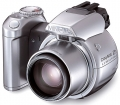
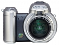
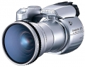
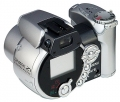
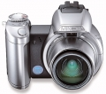
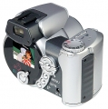
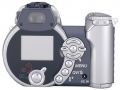
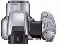

器材库 > 不可换镜头数码相机 > Dimage Z1

规格总览
发布日期
2003-08-07
停产
是
影像规格
影像传感器
CCD
影像传感器尺寸
1/2.7英寸
总像素
330万
有效像素
320万
静态图像尺寸
2048×1536/1600×1200/1280×960/640×480
静态图像格式
JPEG
画幅比
4:3
短片尺寸
320 × 240@24fps
短片格式
AVI
镜头和对焦
镜头结构
10片/7组
非球面镜片
3片
焦距
5.8mm-58mm
等效35mm画幅焦距
38mm-380mm
最大光圈
2.8-3.5
最近对焦距离
广角50cm,长焦200cm, 微距4cm
曝光控制
测光模式
多分区评价测光
曝光模式
P（程序自动曝光）
快门速度
4-1/1000
曝光补偿
±2EV以1/3EV级调整
ISO感光度
50, 100, 200, 400, 自动
白平衡
日光, 闪光灯, 阴天, 自定义, 自动, 钨丝灯, 日光灯, 预设白平衡
自拍
10秒, 2秒
闪光灯
内置闪光灯
固定
闪光模式
自动, 慢速同步, 减轻/消除红眼, 强制闪光, 关闭
取景规格
取景器
光学取景器
LCD类型
彩色TFT LCD
LCD尺寸
1.5英寸
LCD像素
11.3万
文件输入/输出
内置存储容量
16MB
存储卡
SD/SDHC, MMC
数据接口
USB
视频/音频接口
AV 输出
电源
电池
4节5号电池
外观
颜色
银色
尺寸
109.5x77.5x80mm
重量
3.5g
attackzhou2010-11-13 12:253.88 分
操作性 3.50功能性 4.00美观性 4.50趣味性 4.00耐用性 3.50性价比 4.50解像力 3.00色彩还原 4.00
zzpabcd2005-07-05 11:384.25 分
操作性 4.50功能性 5.00美观性 4.00趣味性 4.50耐用性 4.00性价比 4.50解像力 3.50色彩还原 4.00
cnbc2005-06-24 20:224.44 分
操作性 4.00功能性 4.50美观性 5.00趣味性 5.00耐用性 3.50性价比 5.00解像力 4.00色彩还原 4.50
partita2005-06-05 14:004.25 分
操作性 4.50功能性 4.50美观性 4.00趣味性 5.00耐用性 4.00性价比 4.50解像力 3.50色彩还原 4.00
gdgd1262004-12-09 19:054.13 分
操作性 4.00功能性 4.50美观性 5.00趣味性 4.00耐用性 3.50性价比 4.50解像力 4.00色彩还原 3.50
无忌小侠2004-08-07 10:202.69 分
操作性 4.50功能性 4.50美观性 3.50趣味性 2.50耐用性 2.00性价比 3.50解像力 0.50色彩还原 0.50
guchaoshui2004-02-19 09:534.13 分
操作性 5.00功能性 5.00美观性 5.00趣味性 5.00耐用性 4.00性价比 1.50解像力 3.00色彩还原 4.50
ewucaca2004-02-17 09:223.25 分
操作性 3.50功能性 3.00美观性 4.00趣味性 3.50耐用性 3.00性价比 3.00解像力 3.00色彩还原 3.00
unogz2004-02-15 20:494.44 分
操作性 4.50功能性 5.00美观性 4.00趣味性 5.00耐用性 4.50性价比 5.00解像力 3.50色彩还原 4.00
lmwyl2004-01-19 11:554.19 分
操作性 4.00功能性 4.50美观性 4.00趣味性 4.50耐用性 4.00性价比 4.50解像力 4.00色彩还原 4.00
sxh2003-12-22 09:014.19 分
操作性 4.50功能性 4.50美观性 3.50趣味性 4.00耐用性 4.00性价比 4.50解像力 4.00色彩还原 4.50
中国狼2003-12-15 00:234.31 分
操作性 4.50功能性 4.50美观性 4.50趣味性 4.50耐用性 4.00性价比 5.00解像力 4.00色彩还原 3.50
German2003-11-22 17:054.81 分
操作性 5.00功能性 5.00美观性 4.50趣味性 5.00耐用性 5.00性价比 5.00解像力 4.50色彩还原 4.50
阿土伯2003-11-06 20:464.13 分
操作性 4.00功能性 4.00美观性 4.50趣味性 5.00耐用性 4.00性价比 4.50解像力 3.50色彩还原 3.50
产品图 / 样片
Dimage Z1

Dimage Z1

Dimage Z1

Dimage Z1

Dimage Z1

Dimage Z1

Dimage Z1

Dimage Z1